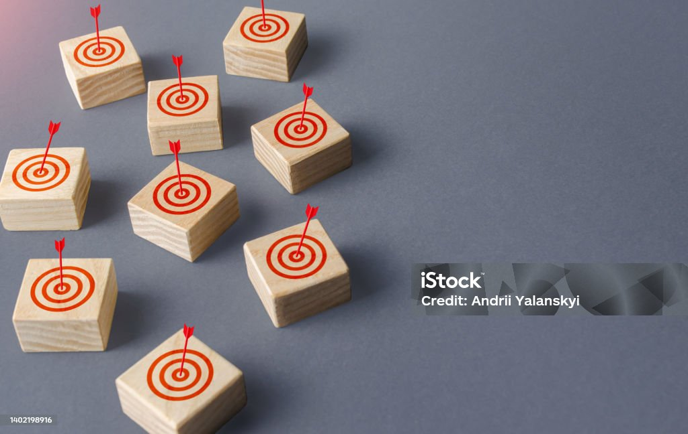

Este módulo tiene como propósito ayudarte a dar el primer paso hacia tu emprendimiento usando lo que ya tienes. Aprenderás a reconocer tus habilidades, detectar oportunidades en tu entorno y valorar los recursos que ya están a tu alcance, aunque sean limitados. 
Al finalizar este módulo, serás capaz de: 
 
ü߆ Identificar tus habilidades, talentos y conocimientos personales.¬†
 
üîç Detectar oportunidades de negocio simples en tu entorno cercano.¬†
 
üß∞ Valorar y organizar los recursos personales que ya posees (como contactos, tiempo o finanzas).¬†
 
üöÄ Motivar tu mentalidad para pasar a la acci√≥n sin esperar condiciones perfectas.¬†
 
¬†üëâ Ejemplo: Aunque no tengas dinero ni una oficina, si sabes hacer pasteles y tienes horno en casa, ya tienes con qu√© empezar. Este m√≥dulo te ense√±a a ver y valorar eso.